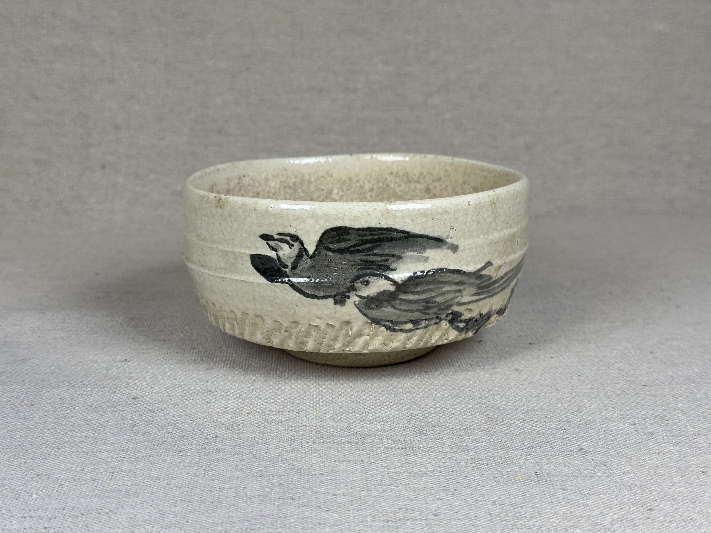
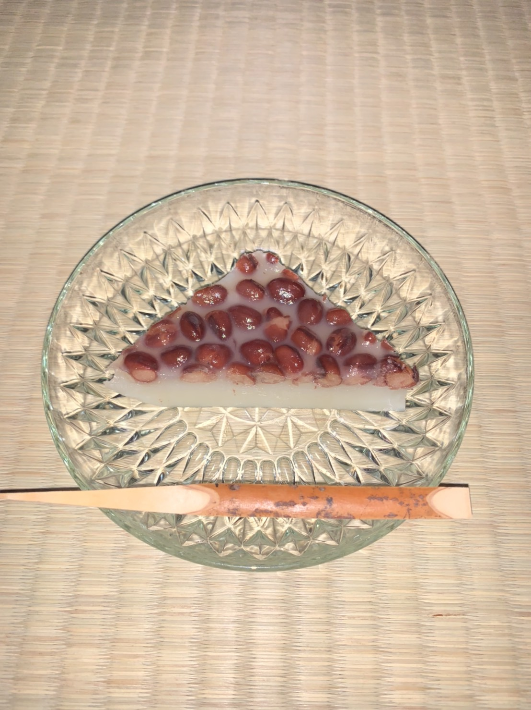
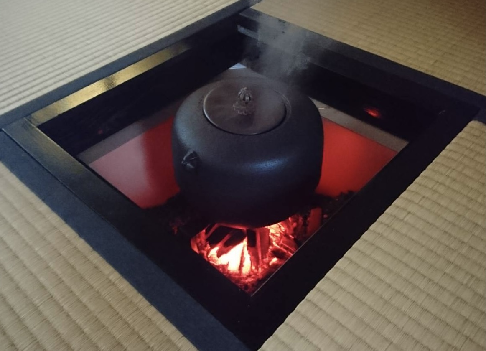
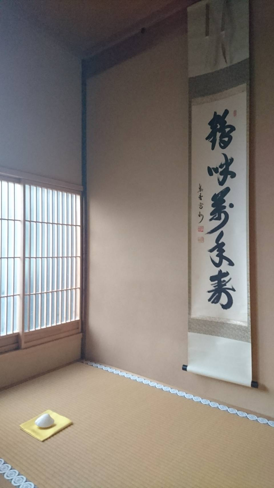
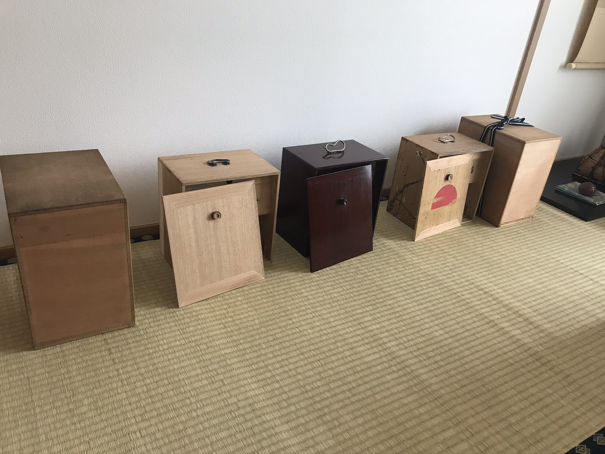
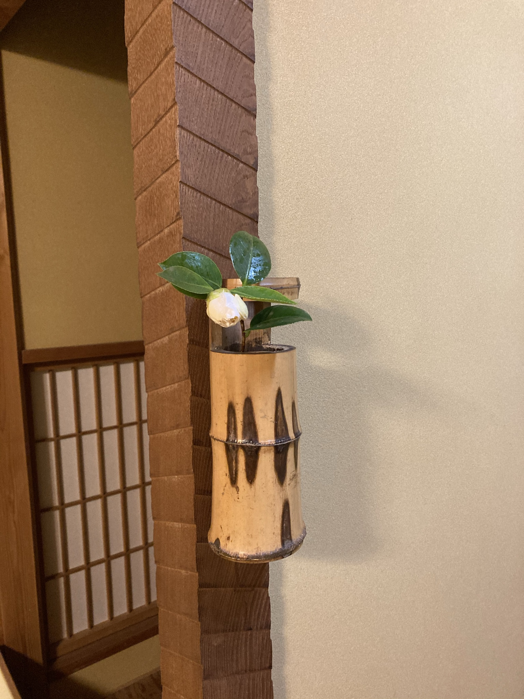

About
茶道は、静けさと向き合う時間。
茶道は、特別な人だけのものではありません。 一服のお茶を点て、季節のしつらえを感じ、 自分の所作と心を少しだけ整える時間です。
静庵茶道教室では、初心者の方にもわかりやすく、 少人数でゆっくり稽古を行います。
Features
はじめてでも通いやすく。
初心者歓迎
道具貸出あり
着物不要
少人数制
正座が不安な方も相談可
Lesson
稽古で学べること
お茶のいただき方から、お点前の基本、道具の扱いまで。 一つひとつの所作を、無理なく丁寧に学んでいきます。
- お茶のいただき方
- お点前の基本
- 道具の扱い
- 季節のしつらえ
- 客としての作法
Pricing
料金
体験稽古
2,000円
月2回稽古
6,000円
入会金
5,000円
Gallery
稽古の風景






Access
教室について
札幌市中央区の小さな稽古場です。
地下鉄駅から徒歩5分ほど。
詳細な住所は、体験稽古のお申し込み後にご案内します。